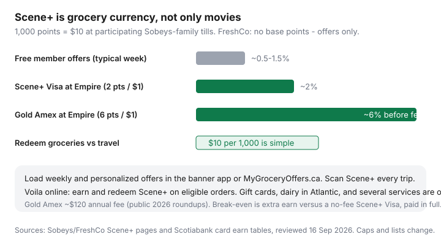

Food & Groceries · Canada
How to use Scene+ for free groceries at Sobeys, FreshCo, and Safeway
Many Canadians still think Scene+ is a movie card they forgot in a wallet. Meanwhile Empire banners — Sobeys, Safeway, FreshCo, Foodland, IGA, Thrifty Foods, Voilà — will turn 1,000 points into $10 of groceries if you load the offers. Missing that is how people pay full-service prices and still call loyalty “not worth it.”
This is the grocery job: earn basics, weekly and personalized offers, FreshCo versus full-service trade-offs, Scotiabank Gold Amex versus a no-fee Scene+ Visa, when to burn for food versus travel, Voilà notes, and the points-over-price trap. Cineplex is a bonus. Dinner is the product.
Disclosure: Scotiabank Scene+ credit cards, the Scene+ shopping portal, and other cashback portals are offer types. Saving Optimizer may earn a commission if we later add partner links. We do not currently claim Scotiabank, Cineplex, or Empire partnerships. Fees, caps, and participating-store lists change — read the issuer page before you apply. Pay in full.
Key takeaways
- 1,000 Scene+ = $10 at participating grocery tills. That is 1¢ a point if you redeem for food.
- Load offers every week in the store app or MyGroceryOffers.ca. FreshCo public copy: no base grocery points.
- Shop FreshCo (or another discounter) for the shelf; use Sobeys/Safeway when a specific flyer cut wins after the extra stop.
- Gold Amex: up to 6 points/$1 at listed Empire banners, annual fee. Scene+ Visa: often 2 points/$1, no fee. Acceptance still wins.
- Do not pay Sobeys prices on Compliments beans to “farm” points.
Scene+ beyond movies: grocery earn basics
Join Scene+ (free), add the number to your Sobeys-family app, and scan every trip. Grocery earn for a free member is mostly loaded offers and in-store events, not a silent 1% on milk. That is the same shape as PC Optimum, which is why both sit in the three-program comparison.
Redemption is the simple part: every 1,000 points = $10 off at participating grocery and some pharmacies. FreshCo’s terms (reviewed 16 Sep 2026) cap grocery redemption at 50,000 points ($500) per day and list a familiar exclusion pile: taxes, delivery, gift cards, some Atlantic dairy, prescriptions, lottery, tobacco, and more. Read the current page before you assume coffee shop points.

Loading weekly and personalized offers
- Put Scene+ on your grocery profile. Sobeys’ public instructions: store app → Offers → link Scene+ with the e-mail codes. MyGroceryOffers.ca is the browser path.
- Open the app on flyer day or Sunday. Load weekly product offers and personalized offers. Unloaded offers are decoration.
- Scan at the till even if you think “nothing loaded.” Events and digital exclusives still miss people who pocket the card.
- Check the receipt for points. Missing points have an in-app claim path — use it once, then keep scanning.
Three minutes. Same Sunday block as the weekly system. If you also shop No Frills, load PC Optimum too — then shop one store that week.
FreshCo vs full-service Sobeys/Safeway trade-offs
FreshCo is Empire’s discounter: Scene+ offers, member pricing on some items, generally no base points. Sobeys, Safeway, IGA, Foodland, and Thrifty Foods are full-service (or closer to it) with nicer produce theatres and higher shelves. Points cannot close a 15% staple gap.
Western Safeway and Thrifty Foods shoppers: you are still Scene+ country. Atlantic Sobeys too. Quebec IGA is in the family. If a FreshCo is 12 minutes away, it is the default grocery store; Sobeys is the “this cut of beef is actually cheaper on the flyer” exception. City-level discounter mapping is in the banner rotation.
Scotiabank Gold Amex vs no-fee Scene+ Visa for grocery earn
Scotiabank’s public Scene+ pages (reviewed 16 Sep 2026) describe:
- Scene+ Visa: 2 Scene+ points per $1 at Sobeys, Safeway, Foodland, FreshCo, Thrifty Foods, Voilà, and listed sisters.
- Gold American Express: 6 points per $1 at that Empire grocery list, plus 5× on other eligible grocery, dining, and related categories, with an annual fee often cited around $120 and caps in the certificate.
At 1¢ a point, 2× is ~2% and 6× is ~6% before the fee. Break-even sketch (labelled): $120 ÷ 4 extra percentage points versus the Visa ≈ $3,000 of eligible Empire grocery if that is the only extra. Real life includes dining, welcome bonuses, and caps. If you shop No Frills most weeks, Gold Amex is a dining/travel card that naps at Loblaw tills — Amex is commonly declined there.
Cobalt pays Membership Rewards, not Scene+. Choose the currency you will burn at the grocery till or on travel you already take. Details in cards by banner.
Redeeming for groceries vs travel/entertainment
Grocery redemption is boring and correctly priced: 1¢ per point. Travel through Scene+ partners can be better or worse depending on the booking. Movies are why you joined in 2014. A sane rule: redeem groceries when the points would actually change this week’s bill (a $10 or $20 knock-down). Let a travel stash build only if you already take that trip. Points FOMO is how people “save” $10 and spend $40 at Cineplex concessions.
Voilà online and Scene+ stacking notes
Sobeys’ Scene+ pages say you can earn and redeem on Voilà. Delivery fees, service charges, and the usual exclusions still apply. Pickup hybrid (order online, grab yourself) is often cheaper than delivery and still lets you scan Scene+. Compare that to PC Express if you are a Loblaw household — different program, same “fees eat points” warning in the weekly system.
Gift-card prefunding and the Scene+ shopping portal are extra layers. Portal Cash Back and grocery bonus points are easy to double-count in a spreadsheet and under-count in real life. Keep them in gift-card cashback if you enjoy paperwork.
Avoiding the ‘points over price’ trap
Trap: driving to Sobeys for 6% Gold Amex points on a cart that is $22 more than FreshCo. Six percent of $22 is $1.32. You paid $22 to earn $1.32. Shop the shelf. Points are a rebate on the store you should use anyway.
Put Scene+ in the Sunday loop, match the card to the till, and pay the statement. The all-banner version of that sentence is maximum rewards without debt.
Sources & date stamps
- Sobeys Scene+ pages and FAQ; FreshCo Scene+ program page (no base points; 1,000 = $10; 50,000/day cap; exclusion list) reviewed 16 Sep 2026.
- Scotiabank Scene+ earn/redeem pages: Visa 2× and Gold Amex 6× grocery lists and participating banners.
- Ratehub 2026 grocery loyalty comparison for 1¢ grocery redemption used in our grocery loyalty comparisons.
Frequently asked questions
Is Scene+ only for Cineplex?
No. Scene+ is the grocery loyalty program at participating Sobeys, Safeway, FreshCo, Foodland, IGA, Thrifty Foods, and related Empire banners, plus movies, dining, and travel. Scan it at the grocery till.
How many Scene+ points equal $10 off groceries?
1,000 points = $10 at participating grocery stores. FreshCo’s public terms allow redeeming up to 50,000 points ($500) per day toward a purchase.
Does FreshCo pay base Scene+ points?
FreshCo’s public Scene+ page says no base points — weekly and personalized offers only. Full-service Sobeys and Safeway still need offers loaded; do not assume a silent percent on every dollar.
Should I get the Scotiabank Gold Amex for groceries?
Only if Empire banners take Amex where you shop, you will spend enough to cover the annual fee (often about $120 in 2026 roundups), and you pay in full. A no-fee Scene+ Visa at 2 points per $1 is the calmer default.
Can I earn Scene+ on Voilà?
Sobeys’ Scene+ pages describe earning and redeeming on eligible Voilà orders. Delivery fees and several product exclusions still apply. Check the current checkout.